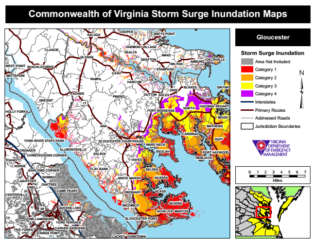

Commonwealth of Virginia Storm Surge Inundation Maps
COOPER
GREYS POINT
Gloucester
Storm Surge Inundation
Area Not Included
Category 1
Category 2
BLAKES
Category 3
Category 4
Interstates
Primary Routes
Addressed Roads
Jurisdiction Boundaries
BELROI
BEULAH
0 1 2 3 4 5 6 7
Miles
CENTERVILLE
YORK TERRACE
SALUDA
CLANCIE
HARMONY VILLAGE HEALYS GLENNS
WEST POINT
SHACKLEFORDS
HARCUM
REDART
GLOUCESTER POINT
YORKTOWN
WAKE GRAFTON
WILTON
AMBURG
DELTAVILLE
STAMPERS
MATTAPONI
CASH
PAMPA
DUTTON
NORTH
RUFF
CROAKER
PORT HAYWOOD
TOANO
NORGE
SKIMINO LIGHTFOOT
OAKTREE
CAMP PEARY
ORDINARY
SEVERN
FIVE FORKS
GWYNN
GLASS
DIXIE ADNER
PINERO
SOLES GRESSIT
17
NAXERA
60
MARYUS
LACKEY
HUDGINS
HOLLY FORKS
FORT NONSENSE
ALLMONDSVILLE
CARVER GARDENS
MOON
ARK
MATHEWS
CARDINAL
YORK RIVER STATE PARK
GLOUCESTER COURTHOUSE
WARE NECK
CHRISTENSONS CORNER
HAYES
MOBJACK
BARLOWS CORNER
CLAY BANK
SELDEN
WHITE MARSH
EWELL
QUEENS LAKE
ACHILLES
KINGS POINT
WICOMICO
WILLIAMSBURG